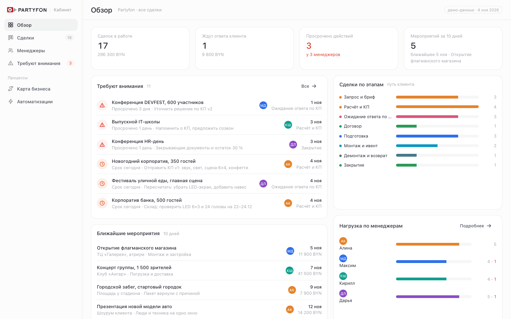
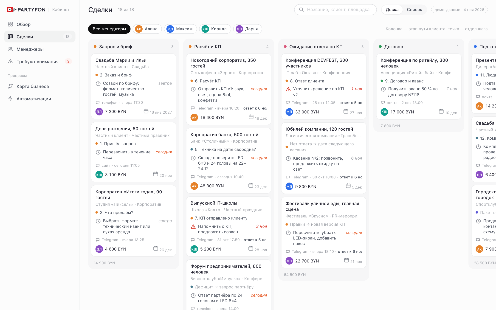
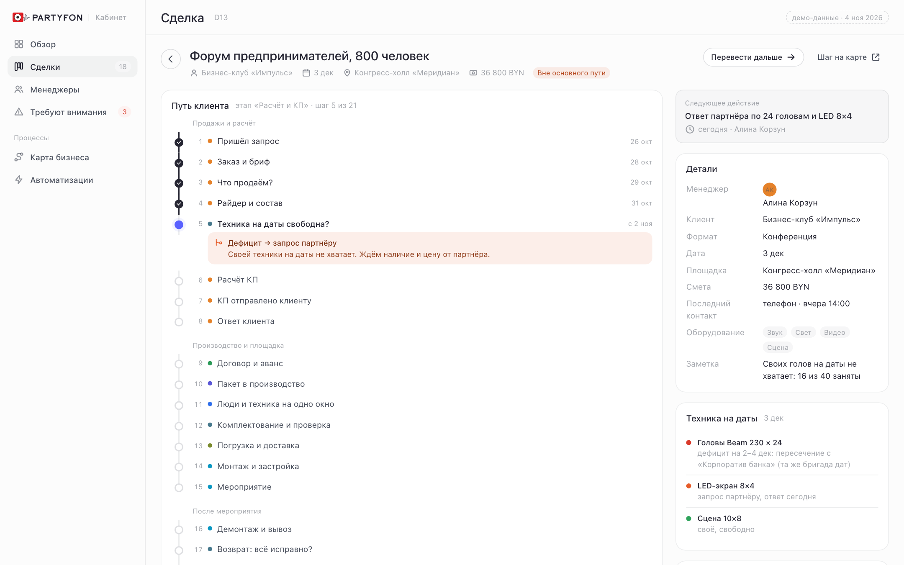

Каждый проект на виду: от запроса до возврата оборудования
Платформа Partyfon собирает путь клиента в 21 шаг. Руководитель видит, на каком этапе каждая сделка и кто из менеджеров где застрял.

Путь клиента в три фазы
Те же шаги, по которым работает Partyfon сегодня. Каждая сделка в кабинете стоит ровно на одном из них.
Продажи и расчётшаги 1–8
Производство и площадкашаги 9–15
После мероприятияшаги 16–21
Прозрачность по каждому менеджеру
Один экран отвечает на вопрос «где сейчас клиент» без звонков и переписки.
Видеть всё, не спрашивая
- Доска сделок по этапам пути: сколько в расчёте, сколько ждут ответа, сколько на площадке
- Нагрузка и просрочки по каждому менеджеру, время ответа клиенту, конверсия
- Список «требуют внимания»: КП без ответа, сделки вне пути, срок сегодня

Одна карточка на сделку
- Путь клиента с текущим шагом, следующее действие и его срок
- Бриф, версии КП, договор и пакет в производство в одном месте, а не в Excel и Telegram
- Напоминание о касании само ставит задачу, если клиент молчит

От первого запроса до повода вернуться. Три фазы, четыре развилки.
Продажи, склад, производство, площадка, логистика, финансы и остальные в одной схеме.
Что уже есть, что на сайте, чего хотят и что надо проверить. Цвет = отдел, оттенок = статус.
Нет ответа, правки, дефицит техники, неполный пакет, отмена, сбой, дефект.
Что платформа берёт на себя
Автоматизации привязаны к шагам пути. Включаются по одной, не ломая привычную работу.
Техника на даты
Перед расчётом состав сверяется со складом и календарём брони: выдача, дорога, монтаж, возврат. Дефицит сразу уходит запросом партнёру.
ПодробнееКП внутри сделки
Расчёт живёт в карточке, а не в отдельном файле. Версии, статус отправки и ответ клиента видны руководителю без вопросов.
ПодробнееКасание после КП
Два дня без ответа — задача менеджеру с датой. Просрочка подсвечивается на доске и в списке «требуют внимания».
ПодробнееПакет в производство
Собирается из брифа, площадки, райдера и контактов. Неполный пакет возвращается продажам с причиной, а не теряется в чате.
ПодробнееОдно окно на дату
Люди, склад, транспорт и площадка подтверждают готовность к одной дате. Отмена снимает брони и пересобирает план.
ПодробнееПосмотрите кабинет на демо-данных
Восемнадцать сделок, четыре менеджера, живая доска и карточки. Доступ по логину от команды Partyfon.